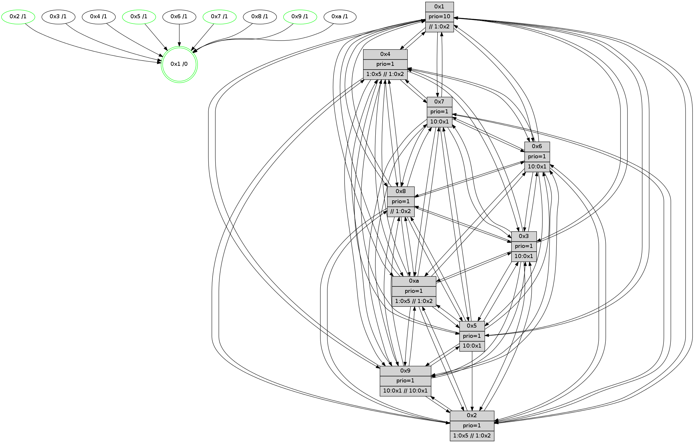

>> << IDX [start] -100 -25 -5 +0 +5 +25 +100 [700.288901091]
 Previous packets
----------------------------------------------------------------------
695.560112 beacon01(faad) #0 coord=01,02,03,04,05,06,07,0a,09,08 cycle=688.0ms assoc
-- color-indic=1 64 d8 65
695.570094 beacon02(faad) #0 coord=01,02,03,04,05,06,07,0a,09,08 cycle=688.0ms assoc 64 4b 54
695.580094 beacon03(faad) #0 coord=01,02,03,04,05,06,07,0a,09,08 cycle=688.0ms assoc 64 31 19
695.590094 beacon04(faad) #0 coord=01,02,03,04,05,06,07,0a,09,08 cycle=688.0ms assoc 64 46 f3
695.600095 beacon05(faad) #0 coord=01,02,03,04,05,06,07,0a,09,08 cycle=688.0ms assoc 64 3c be
695.610096 beacon06(faad) #0 coord=01,02,03,04,05,06,07,0a,09,08 cycle=688.0ms assoc 64 b2 69
695.620098 beacon07(faad) #0 coord=01,02,03,04,05,06,07,0a,09,08 cycle=688.0ms assoc 64 c8 24
695.630101 beacon0a(faad) #0 coord=01,02,03,04,05,06,07,0a,09,08 cycle=688.0ms assoc 64 b9 2f
695.640099 beacon09(faad) #0 coord=01,02,03,04,05,06,07,0a,09,08 cycle=688.0ms assoc 64 37 f8
695.650101 beacon08(faad) #0 coord=01,02,03,04,05,06,07,0a,09,08 cycle=688.0ms assoc 64 4d b5
695.661006 [STC(10)->1 #0.61 tree-change,inconsistent-stability,to-color d=1]
695.662292 [Hello(1): seq=355 sym=4,2,9,5,10,3,8,6,7 sysInfo=coloring-mode-on,ColoringModeRequestCalled stat=4:0,1,4,0/2:10,2,11,8/9:15,9,5,0/5:10,1,3,0/10:2,15,11,7/3:13,12,0,10/8:1,14,14,6/6:15,10,10,6/7:0,13,0,8]
695.665328 [Color(8) seq=126 @0:0 prio=1 >>1.@2,1.@3,1.@4]
695.667217 [Hello(6): seq=446 sym=2,3,5,4,7,9,8,10,1 sym= sysInfo= stat=]
695.672146 [Hello(4): seq=446 sym=5,7,6,2,3,9,8,10,1 sysInfo= stat=5:10,3,2,7/7:5,15,5,2/6:14,5,6,7/2:0,4,1,7/3:5,5,12,4/9:10,11,2,3/8:1,11,3,7/10:6,9,6,6/1:10,15,4,1]
695.674568 [Hello(7): seq=446 sym=2,3,5,6,4,8,9,10,1 sysInfo=hasWarning stat=2:8,15,11,9/3:9,14,6,8/5:7,3,6,11/6:15,9,4,2/4:6,9,1,0/8:13,5,8,4/9:11,12,8,8/10:1,5,9,7/1:2,2,5,1]
695.679302 [STC(7)->1 #0.61 tree-change,inconsistent-stability,to-color d=1]
695.687079 [STC(6)->1 #0.61 tree-change,inconsistent-stability,to-color d=1]
695.688907 [Hello(3): seq=446 sym=1,7,6,2,4,8,9,10,5 sysInfo= stat=1:3,6,6,1/7:3,0,2,1/6:7,9,15,7/2:6,12,3,8/4:1,0,2,4/8:14,4,0,2/9:2,5,8,6/10:8,8,4,5/5:14,12,3,7]
695.693020 [STC(3)->1 #0.61 tree-change,inconsistent-stability,to-color d=1]
----------------------------------------------------------------------
696.348244 beacon01(faad) #0 coord=01,02,03,04,05,06,07,0a,09,08 cycle=688.0ms assoc
-- color-indic=1 64 64 60
696.358227 beacon02(faad) #0 coord=01,02,03,04,05,06,07,0a,09,08 cycle=688.0ms assoc 64 f7 51
696.368226 beacon03(faad) #0 coord=01,02,03,04,05,06,07,0a,09,08 cycle=688.0ms assoc 64 8d 1c
696.378227 beacon04(faad) #0 coord=01,02,03,04,05,06,07,0a,09,08 cycle=688.0ms assoc 64 fa f6
696.388226 beacon05(faad) #0 coord=01,02,03,04,05,06,07,0a,09,08 cycle=688.0ms assoc 64 80 bb
696.398229 beacon06(faad) #0 coord=01,02,03,04,05,06,07,0a,09,08 cycle=688.0ms assoc 64 0e 6c
696.408228 beacon07(faad) #0 coord=01,02,03,04,05,06,07,0a,09,08 cycle=688.0ms assoc 64 74 21
696.418231 beacon0a(faad) #0 coord=01,02,03,04,05,06,07,0a,09,08 cycle=688.0ms assoc 64 05 2a
696.428233 beacon09(faad) #0 coord=01,02,03,04,05,06,07,0a,09,08 cycle=688.0ms assoc 64 8b fd
696.438232 beacon08(faad) #0 coord=01,02,03,04,05,06,07,0a,09,08 cycle=688.0ms assoc 64 f1 b0
696.451537 [Hello(8): seq=390 sym=5,2,3,4,7,6,9,10,1 sysInfo=hasWarning stat=5:8,1,5,7/2:1,5,13,2/3:10,3,2,8/4:2,2,4,6/7:9,13,6,6/6:4,4,1,7/9:0,7,6,5/10:3,12,5,6/1:14,12,4,0]
696.457910 [Hello(5): seq=447 sym=7,6,4,3,1,9,8,10,2 sysInfo=hasWarning stat=7:10,15,7,4/6:10,0,6,6/4:5,10,14,5/3:14,5,15,5/1:12,0,4,1/9:9,1,2,3/8:14,6,13,4/10:7,11,5,5/2:5,9,2,0]
696.461564 [Color(1) seq=127 @0:0 prio=10 >>1.@2,1.@3,1.@4]
696.463301 [Color(9) seq=95 @0:0 prio=1 >10.@1,1.@2,1.@3,1.@5 >>10.@1,1.@2,1.@3]
696.466501 [Hello(2): seq=443 sym=4,7,6,3,9,8,10,1 sysInfo=hasWarning stat=4:0,13,1,4/7:2,11,8,4/6:5,3,5,5/3:6,8,0,2/9:9,10,15,1/8:5,11,12,4/10:12,1,1,4/1:10,12,0,1]
696.468993 [Color(5) seq=100 @0:0 prio=1 >10.@1,1.@2,1.@3,1.@4]
696.471126 [Hello(10): seq=379 sym=6,2,3,8,9,5,7,4,1 sysInfo=hasWarning stat=6:15,2,6,2/2:13,5,12,1/3:3,1,12,4/8:8,4,1,6/9:1,7,0,4/5:14,15,0,8/7:11,12,4,3/4:11,3,12,6/1:11,12,7,1]
696.475071 [Color(2) seq=92 @0:0 prio=1 >1.@5 >>1.@2,1.@3,1.@4]
696.477632 [STC(8)->10-.->1 #0.61 to-color d=2]
----------------------------------------------------------------------
697.136376 beacon01(faad) #0 coord=01,02,03,04,05,06,07,0a,09,08 cycle=688.0ms assoc
-- color-indic=1 64 a0 6e
697.146359 beacon02(faad) #0 coord=01,02,03,04,05,06,07,0a,09,08 cycle=688.0ms assoc 64 33 5f
697.156360 beacon03(faad) #0 coord=01,02,03,04,05,06,07,0a,09,08 cycle=688.0ms assoc 64 49 12
697.166360 beacon04(faad) #0 coord=01,02,03,04,05,06,07,0a,09,08 cycle=688.0ms assoc 64 3e f8
697.176360 beacon05(faad) #0 coord=01,02,03,04,05,06,07,0a,09,08 cycle=688.0ms assoc 64 44 b5
697.186359 beacon06(faad) #0 coord=01,02,03,04,05,06,07,0a,09,08 cycle=688.0ms assoc 64 ca 62
697.196359 beacon07(faad) #0 coord=01,02,03,04,05,06,07,0a,09,08 cycle=688.0ms assoc 64 b0 2f
697.206364 beacon0a(faad) #0 coord=01,02,03,04,05,06,07,0a,09,08 cycle=688.0ms assoc 64 c1 24
697.216364 beacon09(faad) #0 coord=01,02,03,04,05,06,07,0a,09,08 cycle=688.0ms assoc 64 4f f3
697.226364 beacon08(faad) #0 coord=01,02,03,04,05,06,07,0a,09,08 cycle=688.0ms assoc 64 35 be
697.238183 [Hello(3): seq=447 sym=1,7,6,2,4,8,9,10,5 sysInfo= stat=1:3,7,6,1/7:3,0,2,1/6:7,9,15,7/2:7,13,3,8/4:1,0,2,4/8:15,4,1,2/9:3,6,8,6/10:9,8,5,5/5:15,13,3,7]
697.240735 [Hello(4): seq=447 sym=5,7,6,2,3,9,8,10,1 sysInfo= stat=5:11,4,2,7/7:6,15,6,2/6:14,5,7,7/2:1,5,1,7/3:6,5,13,4/9:10,12,2,3/8:2,11,4,7/10:7,9,6,6/1:10,0,4,1]
697.244377 [Hello(6): seq=447 sym=2,3,5,4,7,9,8,10,1 sysInfo= stat=2:0,3,13,7/3:12,14,5,6/5:10,3,4,9/4:13,4,4,0/7:4,1,2,0/9:13,3,6,6/8:8,15,5,5/10:1,7,12,6/1:10,7,1,1]
697.246897 [Hello(7): seq=447 sym=2,3,5,6,4,8,9,10,1 sysInfo=hasWarning stat=2:9,0,11,9/3:10,14,7,8/5:8,4,6,11/6:15,9,5,2/4:6,9,1,0/8:14,5,9,4/9:12,13,8,8/10:2,5,10,7/1:2,3,5,1]
697.255952 [Hello(1): seq=356 sym=4,2,9,5,10,3,8,6,7 sysInfo=coloring-mode-on,ColoringModeRequestCalled stat=4:1,1,4,0/2:11,3,11,8/9:15,10,5,0/5:10,2,3,0/10:3,15,11,7/3:14,12,1,10/8:1,15,15,6/6:0,10,11,6/7:0,13,1,8]
----------------------------------------------------------------------
697.924507 beacon01(faad) #0 coord=01,02,03,04,05,06,07,0a,09,08 cycle=688.0ms assoc
-- color-indic=1 64 1c 6b
697.934490 beacon02(faad) #0 coord=01,02,03,04,05,06,07,0a,09,08 cycle=688.0ms assoc 64 8f 5a
697.944491 beacon03(faad) #0 coord=01,02,03,04,05,06,07,0a,09,08 cycle=688.0ms assoc 64 f5 17
697.954490 beacon04(faad) #0 coord=01,02,03,04,05,06,07,0a,09,08 cycle=688.0ms assoc 64 82 fd
697.964490 beacon05(faad) #0 coord=01,02,03,04,05,06,07,0a,09,08 cycle=688.0ms assoc 64 f8 b0
697.974490 beacon06(faad) #0 coord=01,02,03,04,05,06,07,0a,09,08 cycle=688.0ms assoc 64 76 67
697.984490 beacon07(faad) #0 coord=01,02,03,04,05,06,07,0a,09,08 cycle=688.0ms assoc 64 0c 2a
697.994495 beacon0a(faad) #0 coord=01,02,03,04,05,06,07,0a,09,08 cycle=688.0ms assoc 64 7d 21
698.004494 beacon09(faad) #0 coord=01,02,03,04,05,06,07,0a,09,08 cycle=688.0ms assoc 64 f3 f6
698.014497 beacon08(faad) #0 coord=01,02,03,04,05,06,07,0a,09,08 cycle=688.0ms assoc 64 89 bb
698.027899 [Hello(10): seq=380 sym=6,2,3,8,9,5,7,4,1 sysInfo=hasWarning stat=6:0,2,6,2/2:13,6,12,1/3:4,1,12,4/8:8,4,2,6/9:1,7,0,4/5:14,15,0,8/7:12,12,4,3/4:12,3,12,6/1:12,12,7,1]
698.030938 [Color(4) seq=91 @0:0 prio=1 >1.@5 >>1.@2,1.@3,1.@4]
698.032864 [Hello(5): seq=448 sym=7,6,4,3,1,9,8,10,2 sysInfo=hasWarning stat=7:11,15,7,4/6:11,0,6,6/4:6,10,14,5/3:15,5,15,5/1:13,0,4,1/9:9,1,2,3/8:15,6,14,4/10:8,11,5,5/2:5,10,2,0]
698.035552 [Hello(2): seq=444 sym=4,7,6,3,9,8,10,1 sysInfo=hasWarning stat=4:1,13,1,4/7:3,11,8,4/6:6,3,5,5/3:7,8,0,2/9:9,10,15,1/8:6,11,13,4/10:12,1,1,4/1:11,12,0,1]
698.040157 [Color(2) seq=93 @0:0 prio=1 >1.@5 >>1.@2,1.@3,1.@4]
698.043377 PARSE ERROR************************
Traceback (most recent call last):
File "PacketAnalysis.py", line 167, in showOperaPacket
structPacket = OperaPacketParse.parsePacket(rawPacket)
File "../../pkg-python/HipSens/Core/OperaPacketParse.py", line 461, in parsePacket
return parseHelloMessage(data)
File "../../pkg-python/HipSens/Core/OperaPacketParse.py", line 125, in parseHelloMessage
struct.unpack("!H",linkList[:2])[0])
error: unpack requires a string argument of length 2
48 34 09 00 01 87 00 02 02 12 05 00 02 00 03 00 04 00 07 00 06 00 08 00 0a 00 01 00 53 04 00 02 00 00 4c 12 8f 71 58 e3 70 86 50 59 38 6e 53 b8 29 b1 76 63 17 ba 4d bc
698.045887 [Color(5) seq=101 @0:0 prio=1 >10.@1,1.@2,1.@3,1.@4]
698.051121 [Color(9) seq=96 @0:0 prio=1 >10.@1,1.@2,1.@3,1.@5 >>10.@1,1.@2,1.@3]
----------------------------------------------------------------------
698.712637 beacon01(faad) #0 coord=01,02,03,04,05,06,07,0a,09,08 cycle=688.0ms assoc
-- color-indic=1 64 c8 5e
698.722619 beacon02(faad) #0 coord=01,02,03,04,05,06,07,0a,09,08 cycle=688.0ms assoc 64 5b 6f
698.732620 beacon03(faad) #0 coord=01,02,03,04,05,06,07,0a,09,08 cycle=688.0ms assoc 64 21 22
698.742620 beacon04(faad) #0 coord=01,02,03,04,05,06,07,0a,09,08 cycle=688.0ms assoc 64 56 c8
698.752621 beacon05(faad) #0 coord=01,02,03,04,05,06,07,0a,09,08 cycle=688.0ms assoc 64 2c 85
698.762621 beacon06(faad) #0 coord=01,02,03,04,05,06,07,0a,09,08 cycle=688.0ms assoc 64 a2 52
698.772620 beacon07(faad) #0 coord=01,02,03,04,05,06,07,0a,09,08 cycle=688.0ms assoc 64 d8 1f
698.782626 beacon0a(faad) #0 coord=01,02,03,04,05,06,07,0a,09,08 cycle=688.0ms assoc 64 a9 14
698.792624 beacon09(faad) #0 coord=01,02,03,04,05,06,07,0a,09,08 cycle=688.0ms assoc 64 27 c3
698.802627 beacon08(faad) #0 coord=01,02,03,04,05,06,07,0a,09,08 cycle=688.0ms assoc 64 5d 8e
698.813796 [Hello(7): seq=448 sym=2,3,5,6,4,8,9,10,1 sysInfo=hasWarning stat=2:10,1,11,9/3:10,14,7,8/5:9,5,6,11/6:15,9,5,2/4:6,9,1,0/8:14,5,9,4/9:13,14,8,8/10:3,5,10,7/1:3,4,5,1]
698.817822 [Hello(4): seq=448 sym=5,7,6,2,3,9,8,10,1 sysInfo= stat=5:12,5,2,7/7:7,15,6,2/6:15,5,7,7/2:2,6,1,7/3:6,5,13,4/9:11,13,2,3/8:2,11,4,7/10:8,9,6,6/1:11,0,4,1]
698.821897 [STC(1) #0.62 tree-change,inconsistent-stability,stable,to-color d=0]
698.823972 [Hello(6): seq=448 sym=2,3,5,4,7,9,8,10,1 sysInfo= stat=2:1,4,13,7/3:12,14,5,6/5:11,4,4,9/4:13,4,4,0/7:5,1,2,0/9:14,4,6,6/8:9,15,5,5/10:1,7,12,6/1:11,8,1,1]
698.828092 [Hello(3): seq=448 sym=1,7,6,2,4,8,9,10,5 sysInfo= stat=1:4,8,6,1/7:4,0,2,1/6:8,9,15,7/2:8,14,3,8/4:2,0,2,4/8:15,4,1,2/9:4,7,8,6/10:9,8,5,5/5:0,14,3,7]
----------------------------------------------------------------------
699.500768 beacon01(faad) #0 coord=01,02,03,04,05,06,07,0a,09,08 cycle=688.0ms assoc
-- color-indic=1 64 74 5b
699.510751 beacon02(faad) #0 coord=01,02,03,04,05,06,07,0a,09,08 cycle=688.0ms assoc 64 e7 6a
699.520751 beacon03(faad) #0 coord=01,02,03,04,05,06,07,0a,09,08 cycle=688.0ms assoc 64 9d 27
699.530750 beacon04(faad) #0 coord=01,02,03,04,05,06,07,0a,09,08 cycle=688.0ms assoc 64 ea cd
699.540750 beacon05(faad) #0 coord=01,02,03,04,05,06,07,0a,09,08 cycle=688.0ms assoc 64 90 80
699.550750 beacon06(faad) #0 coord=01,02,03,04,05,06,07,0a,09,08 cycle=688.0ms assoc 64 1e 57
699.560751 beacon07(faad) #0 coord=01,02,03,04,05,06,07,0a,09,08 cycle=688.0ms assoc 64 64 1a
699.570755 beacon0a(faad) #0 coord=01,02,03,04,05,06,07,0a,09,08 cycle=688.0ms assoc 64 15 11
699.580758 beacon09(faad) #0 coord=01,02,03,04,05,06,07,0a,09,08 cycle=688.0ms assoc 64 9b c6
699.590759 beacon08(faad) #0 coord=01,02,03,04,05,06,07,0a,09,08 cycle=688.0ms assoc 64 e1 8b
699.602044 [STC(7)->1 #0.62 tree-change,inconsistent-stability,stable,to-color d=1]
699.603430 [Hello(8): seq=392 sym=5,2,3,4,7,6,9,10,1 sysInfo=hasWarning stat=5:9,2,5,7/2:2,6,13,2/3:12,3,2,8/4:3,2,4,6/7:11,13,6,6/6:6,4,1,7/9:1,8,6,5/10:3,12,5,6/1:0,13,5,0]
699.605928 [TreeStatus(7)-.->1 #0.62 tree-change,inconsistent-stability,stable child=1]
699.607524 [STC(8)->1 #0.62 to-color d=1]
699.609162 [Hello(9): seq=392 sym=5,2,3,4,7,6,8,10,1 sysInfo=hasWarning stat=5:1,7,15,8/2:3,14,8,5/3:7,8,0,7/4:10,5,0,5/7:15,6,8,3/6:9,11,3,5/8:2,11,9,2/10:3,6,6,7/1:10,11,8,1]
699.612311 [STC(9)->1 #0.62 tree-change,inconsistent-stability,stable,to-color d=1]
699.614096 [STC(4)->1 #0.62 to-color d=1]
699.615532 [Color(9) seq=97 @0:0 prio=1 >10.@1,1.@2,1.@3,1.@5 >>10.@1,1.@2,1.@3]
699.618879 [Hello(10): seq=381 sym=6,2,3,8,9,5,7,4,1 sysInfo=hasWarning stat=6:1,2,6,2/2:14,7,12,1/3:5,1,12,4/8:8,4,2,6/9:2,8,0,4/5:15,0,0,8/7:13,12,4,3/4:12,3,12,6/1:13,13,8,1]
699.622643 [STC(10)->1 #0.62 tree-change,inconsistent-stability,to-color d=1]
699.624157 [Color(1) seq=129 @0:0 prio=10 >>1.@2,1.@3,1.@4]
699.626393 [Hello(2): seq=445 sym=4,7,6,3,9,8,10,1 sysInfo=hasWarning stat=4:2,13,1,4/7:4,11,8,4/6:7,3,5,5/3:8,8,0,2/9:10,11,15,1/8:6,11,13,4/10:13,1,1,4/1:11,12,1,1]
699.630995 [STC(2)->1 #0.62 tree-change,inconsistent-stability,stable,to-color d=1]
699.634250 [Color(2) seq=94 @0:0 prio=1 >1.@5 >>1.@2,1.@3,1.@4]
699.637465 [Hello(5): seq=449 sym=7,6,4,3,1,9,8,10,2 sysInfo=hasWarning stat=7:12,15,7,4/6:12,0,6,6/4:7,10,14,5/3:0,5,15,5/1:13,0,5,1/9:9,2,2,3/8:15,6,14,4/10:9,11,5,5/2:5,10,2,0]
699.642224 [STC(5)->1 #0.62 tree-change,inconsistent-stability,stable,to-color d=1]
699.644186 [Color(5) seq=102 @0:0 prio=1 >10.@1,1.@2,1.@3,1.@4]